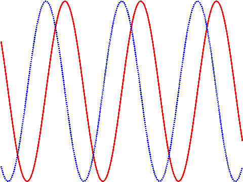
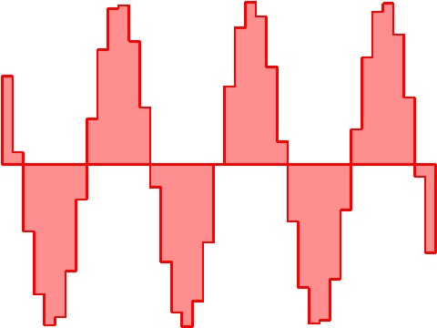
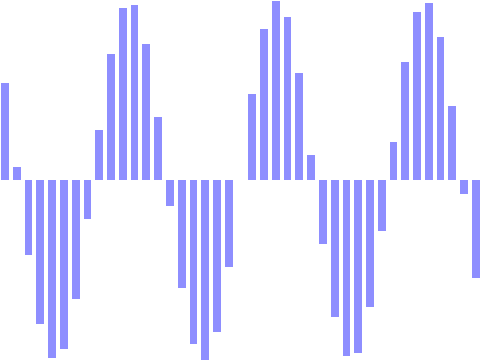

Combining plots
So far, we plotted a very basic graph of a sinusoid. Now, we will combine two plots, and we will need to make them look visually distinct. This is done using the qpen command:

(Note again that specifying the plotting style must occur before plotting the data.)
The qpen command takes many kinds of arguments; the most important ones are color, specified as a single letter Matlab-style color name; line width, specified in printer’s points (1/72th of an inch); and pattern.
In addition to simple line series plots as shown above, QPlot can also produce skyline plots and bar graphs:


These examples also introduced the qbrush command and an alternate way of specifying color: as a triplet of RGB digits.